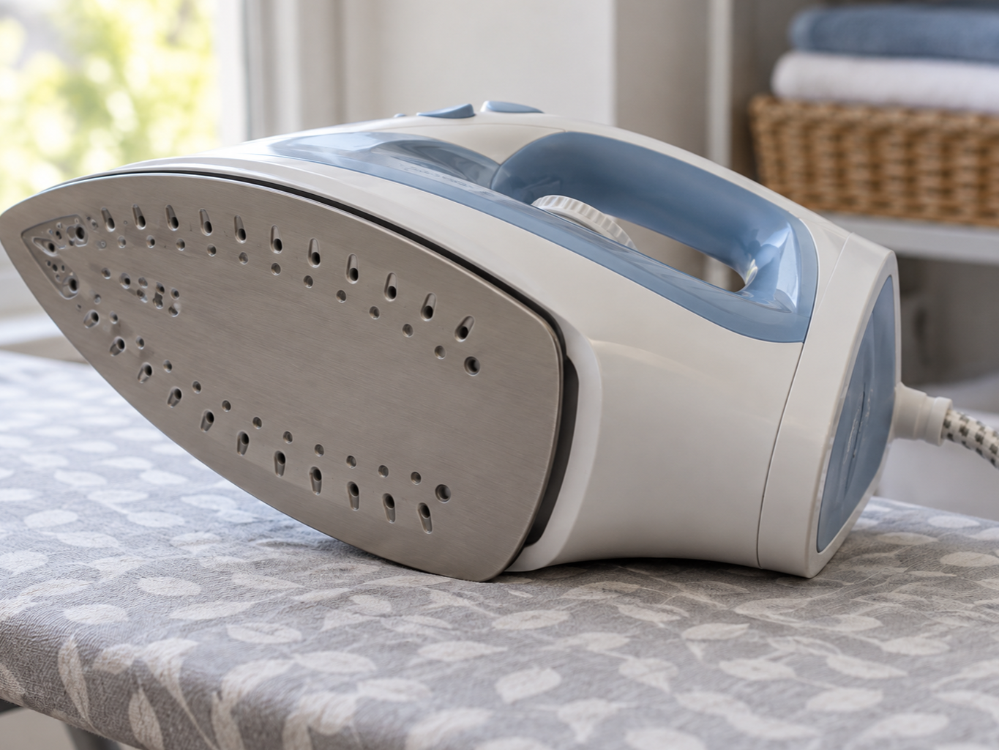
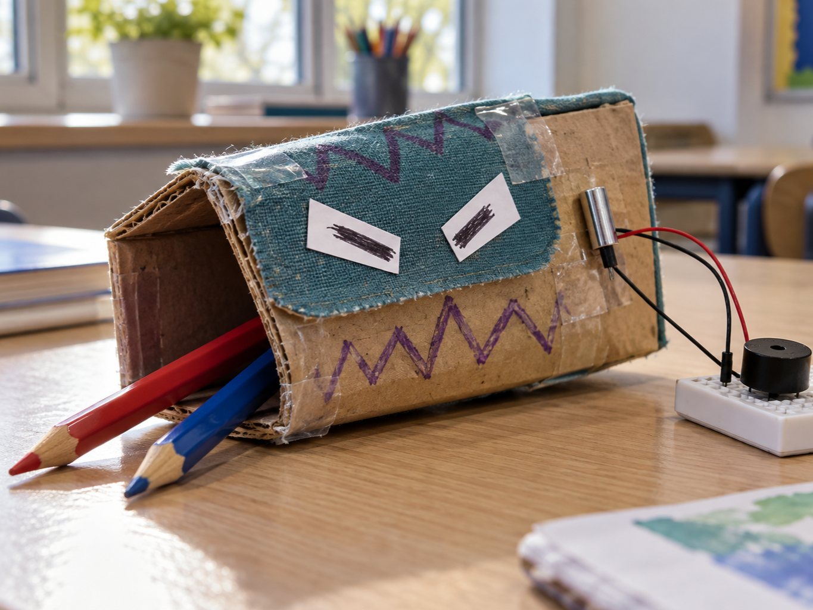

Iron safety shut-off
DetectIron tips sideways
DecideShut-off delay reached
DoSwitch the heater off
A tilt switch changes state when it tips past a particular angle.
A tiny metal ball rolls inside and touches two contacts, completing the circuit.
It can detect that an object has been picked up, tipped over or opened.


from gpiozero import Button
tilt = Button(23)
tilted = tilt.is_pressedfrom picozero import Switch
tilt = Switch(16)
tilted = tilt.is_closed